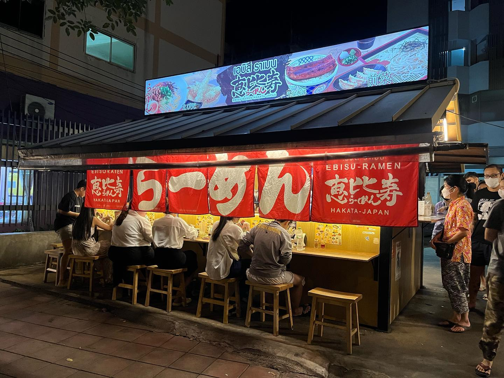

町で最高のラーメン
Best Ramen in Town
Nestled within the heart of our ramen haven, we take immense pride in safeguarding a recipe that has weathered the sands of time since 1910 in Japan. Embarking on a gastronomic journey that spans generations, we have painstakingly preserved the authenticity of our flavors for over a century. Every meticulously crafted bowl of ramen stands as a testament to our unwavering commitment to tradition and uncompromising quality.
With each steaming bowl we serve, we embark on a voyage to transport our customers to the bustling streets of Japan. Our mission is to create an unparalleled culinary experience that resonates with the soul of our time-honored tradition. As fervent admirers of our craft, we are grateful for the loyal following of ramen enthusiasts who share our passion for the artistry and authenticity we infuse into every spoonful.